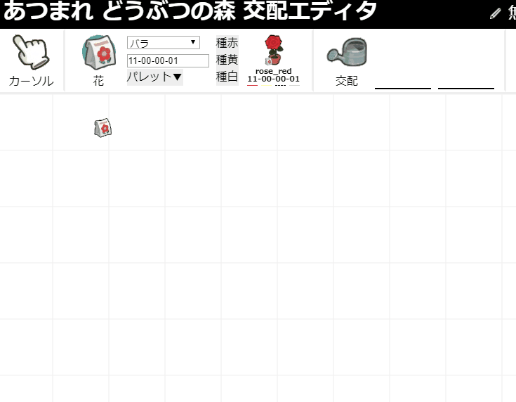
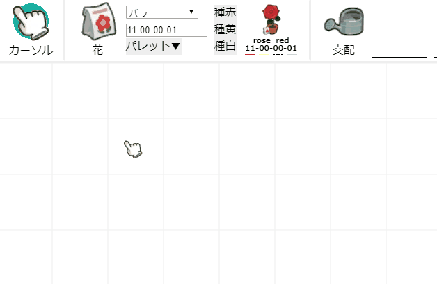
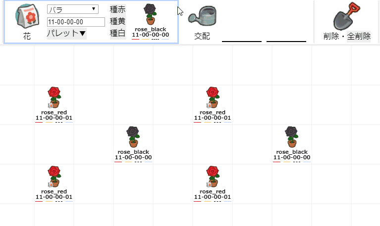
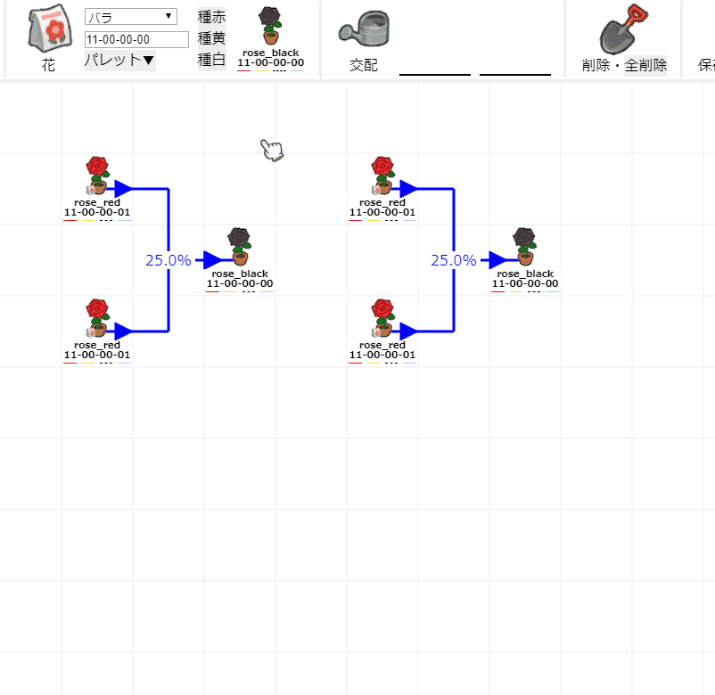
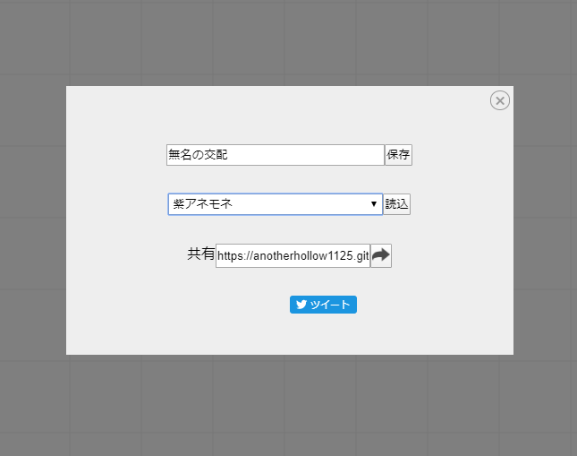

# あつまれ どうぶつの森 交配エディタ 使い方
## カーソルモード
この後説明していく機能を統合した機能と言えます。
デフォルトで選ばれており、エディタ上でクリックするとコンテキストメニューが現れます。
- 各種花: 花を植えます。
- 削除: コンテキストメニューの上のアイテム(花、交配ライン)を消去します。
- 交配: 親を2つ選んで、エディタ上の任意点をクリックすると交配線が引かれます。点の場所が悪いと失敗します。
カーソルの機能は任意モードにて右クリックでも出せます。

## 花モード
花を植えるモードです。
コンテキストメニューにない花を植えることができます。
(以下のgifでコンテキストメニューは右クリックで呼んでいます。)

## 交配モード
親花を2つ選び、花または任意点をクリックすると交配ラインが生成されます。\
(点の位置が悪いと失敗します。)
選択中の親は水色の枠で強調されます。交配率は自動的に計算されるので、再計算のために線を引き直す必要はありません。
また、交配モードに限定されませんが、D＆Dを利用することでも交配ラインを引くことができます。

## 削除モード
クリックしたマスのアイテム(花、交配ライン)を削除します。
全削除を実行すると、エディタの情報を保存している[フラグメント識別子](https://developer.mozilla.org/ja/docs/Web/HTTP/Basics_of_HTTP/Identifying_resources_on_the_Web#Fragment)がリセットされることで全てリセットされます。

## 保存・共有モード
上記のモードとは異なりエディタの内容を変更するものではありません。
- Cookieを利用した保存(保存ボタンの横はファイル名)
- 保存したデータのロード
- 現在のURLのコピー
- ツイッターを利用した共有
を行うことができます。
このサイトを利用しただけでCookieが使われることはありません。初回保存時にCookieを使用してよいか尋ねます。
ちなみに共有欄にあるURLは現在のURL(フラグメント識別子を含んだ交配エディタのURL)と全く等しいので、\
ブラウザのURLフィールドをコピーするだけでも目的は達成されます。

© namnium1125 (anotherhollow1125) 2020 all rights reserved.